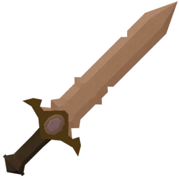

가상 클래스를 활용한 UI 디자인
목표가 없는 사람은 시간을 허투로 쓴다.
물질은 내가 원하는 것을 이루기 위한 수단이지, 목표가 될 수 없다.
꿈과 직업은 서로 다르다. 달라야 한다.
어디에 가치를 두느냐에 따라 인생이 달라진다.
사진 채우기


목표가 없는 사람은 시간을 허투로 쓴다.
물질은 내가 원하는 것을 이루기 위한 수단이지, 목표가 될 수 없다.
꿈과 직업은 서로 다르다. 달라야 한다.
어디에 가치를 두느냐에 따라 인생이 달라진다.